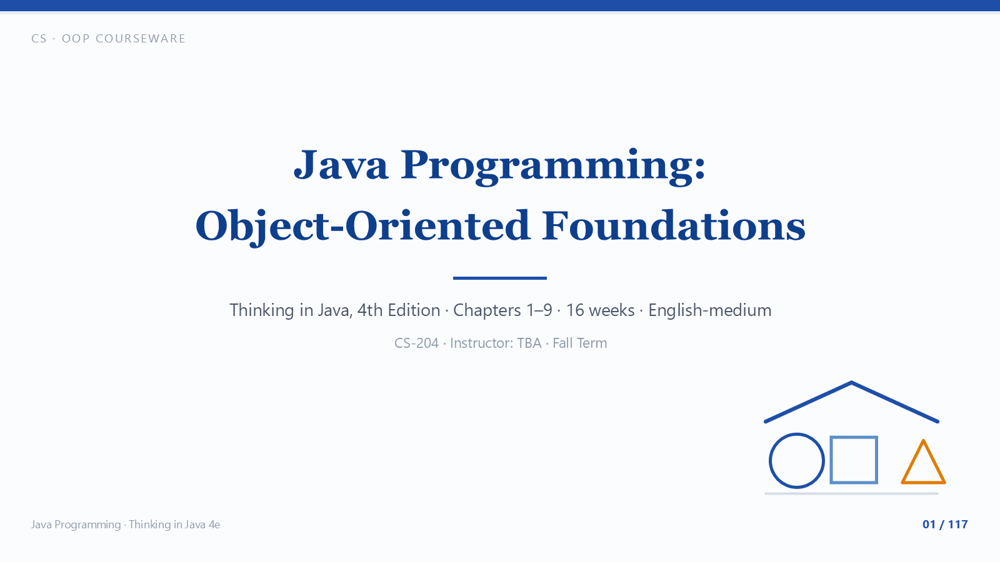

Java Programming · Object-Oriented Foundations · Thinking in Java 4e (Ch 1–9)
AUTO-PLAY: ON
1 / 120
⏮ Prev
⏸ Pause
Next ⏭
Auto
📜 Text
▦ Pages
⛶
▶
Java Programming:
Object-Oriented Foundations
Narrated courseware · 120 slides · ≈ 80 minutes · auto-plays with voice-over
Click anywhere to start · Space pause · ←/→ navigate · G page overview
✕ Close
🎉 Course complete
You have listened to all 120 slides. Review any section with ← → or the pages grid.
↻ Restart from slide 1